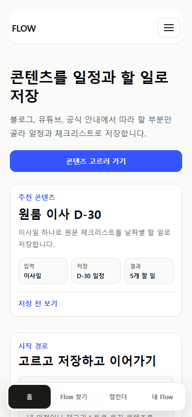
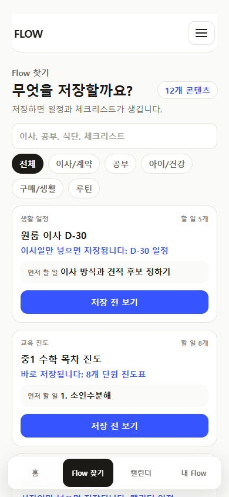
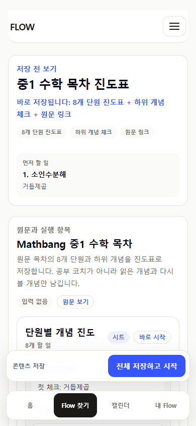
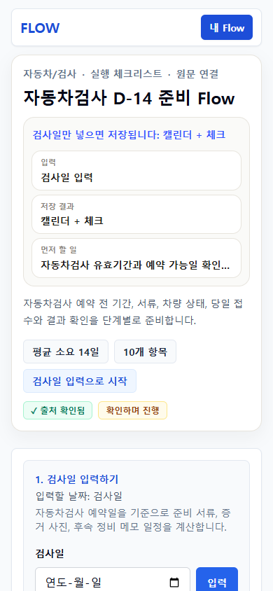
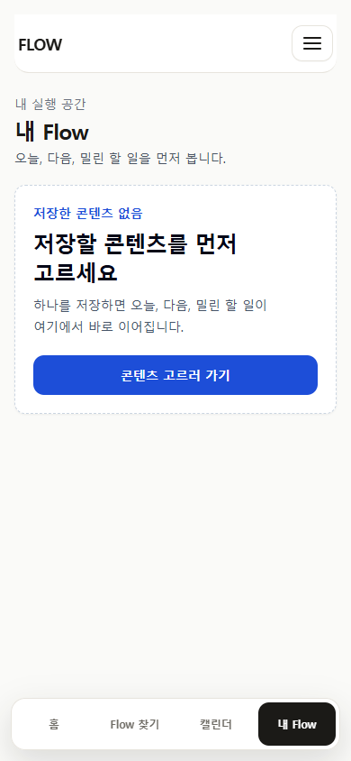
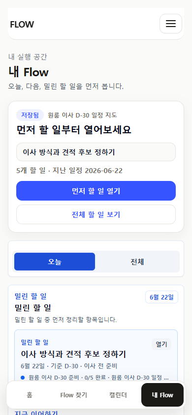

FlowMe UX/UI final audit
Claude Design P0~P2 개선 루프 재검토 패키지
새 기능 추가 없이 홈, Flow 찾기, 공개 Flow 상세, Flow Map 상세, My Flow, 캘린더, export UX의 기준선 유지 여부를 점검했다. Claude Design에게는 이 문서와 소스 링크를 기준으로 남은 이슈와 다음 루프 우선순위를 다시 판단해 달라고 요청한다.
감사 결론
유지된 기준선
4탭 IA, seed/source-backed 구조, 저장-실행-export 흐름은 바꾸지 않았다.
개선된 표면
첫 화면은 행동/결과 중심으로 압축했고, source/detail/memo는 보조 확인 구조로 낮췄다.
검증 상태
모바일 390px route evidence, P3-01 직접 subset 2건, P0/P2 회귀 subset 6건, full test/docs/build 검증 통과를 확보했다.
P3-01 재검증 결론
원인
저장 후 My Flow와 캘린더가 비어 보였던 기존 증거는 앱 버그가 아니라 저장된 브라우저 상태를 유지하지 못한 evidence 생성 오류였다.
현재 증거
`/my?savedMap=moving-d30`는 첫 실행 항목을 보여주고, `/calendar`는 저장된 일정 agenda를 보여준다.
고정 장치
저장 후 true empty state 회귀를 막는 Playwright assertion과 전용 evidence 재생성 스크립트를 추가했다.
P0~P2 닫힘 요약
| 범위 | 상태 | 요약 |
|---|---|---|
| P0 | 완료 | 저장 직후 첫 실행 항목, 날짜 copy, 내부 제작 문구 노출 방지, 필수 입력 feedback 정리. |
| P1 | 완료 | Flow 찾기, 상세 hero, My Flow 첫 슬롯, 캘린더 agenda-first 구조 정리. |
| P2 | 완료 | Export label, true empty state, fixed layer, 저장 카드 진행 표시, 디자인 토큰 마감. |
Route 감사
| Route | H1 | Evidence | 판단 |
|---|---|---|---|
| / | 콘텐츠를 일정과 할 일로 저장 | screenshot | 첫 행동과 4탭 기준선 유지. |
| /flows | 무엇을 저장할까요? | screenshot | 통합 카드 목록과 낮은 카드 밀도 유지. |
| /flow-maps/moving-d30 | 원룸 이사 D-30 일정 지도 | screenshot | 입력, 저장 CTA, 먼저 할 일 흐름 유지. |
| /flow-maps/middle-school-math-1 | 중1 수학 목차 진도표 | screenshot | 날짜 없는 콘텐츠도 저장 전 판단 가능. |
| /f/vehicle-inspection-prep | 자동차검사 D-14 준비 Flow | screenshot | 공개 단일 상세 shell 정책은 추가 판단 필요. |
| /my | 내 Flow | screenshot | true empty CTA 단일화 유지. |
| /my?savedMap=moving-d30 | 내 Flow | screenshot | 저장 후 첫 실행 항목 기준선 유지. |
| /calendar | 캘린더 | screenshot | 저장된 일정 agenda-first 기준선 유지. |
{kind=link}
{kind=link}
{kind=link}
{kind=link}
{kind=link}
{kind=link}
모든 route에서 horizontal overflow는 0건이고, ASCII 내부 검토어 스캔 결과는 0건이다.
모바일 증거








남은 리스크
| 우선순위 | 항목 | 판단 요청 |
|---|---|---|
| Medium | Public Flow detail app shell | `/f/vehicle-inspection-prep` 모바일 evidence에서 하단 4탭 nav가 보이지 않는다. 공유 전용 shell로 둘지, app shell에 맞출지 결정이 필요하다. |
| Low | 특수 workbench polish | 공통 토큰은 정리됐지만 특수 workbench 일부는 다음 visual QA에서 추가 정리가 필요할 수 있다. |
Claude에게 요청할 산출물
이슈 목록
Blocking / High / Medium / Low로 route별 이슈를 다시 나눠 달라.
다음 루프 범위
바로 개발 가능한 UI/copy/구조 작업만 추려 달라.
유지 기준선
바꾸면 안 되는 4탭 IA, 저장/실행/export, source 보존 기준을 명시해 달라.